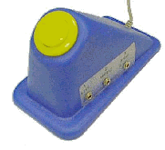

| technology |
| home page |
|  |
| . Cora Research Paper Search AboutCora GiveFeedback Version 0. 2 Add aPaper CoraNews Computer Science Research Paper Search Engine Made possible by Just Research and Justsystem Sara is our search engine for statistics papers. Help Artificial Intelligence Agents, Natural Language Processing, . Human-Computer Interaction Multimedia, Cooperative, Interface Design, . |